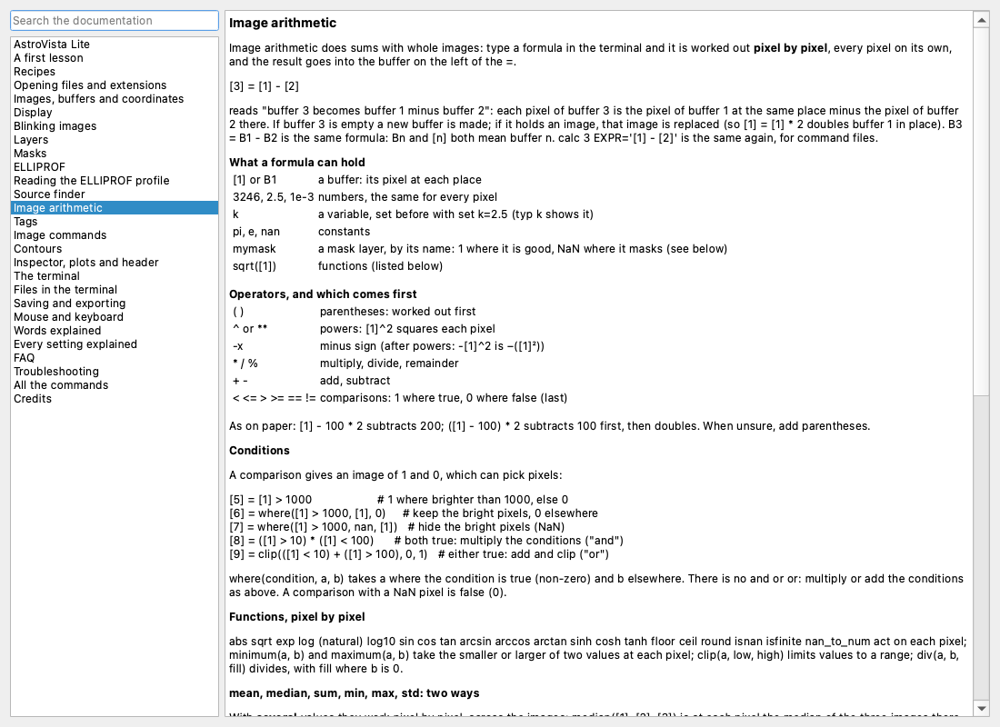
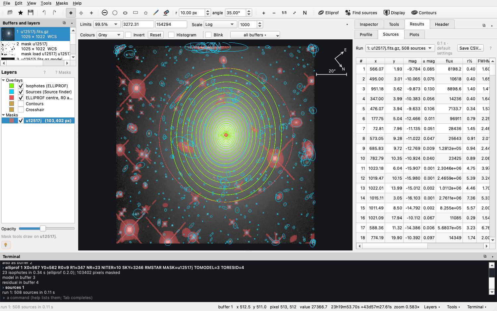
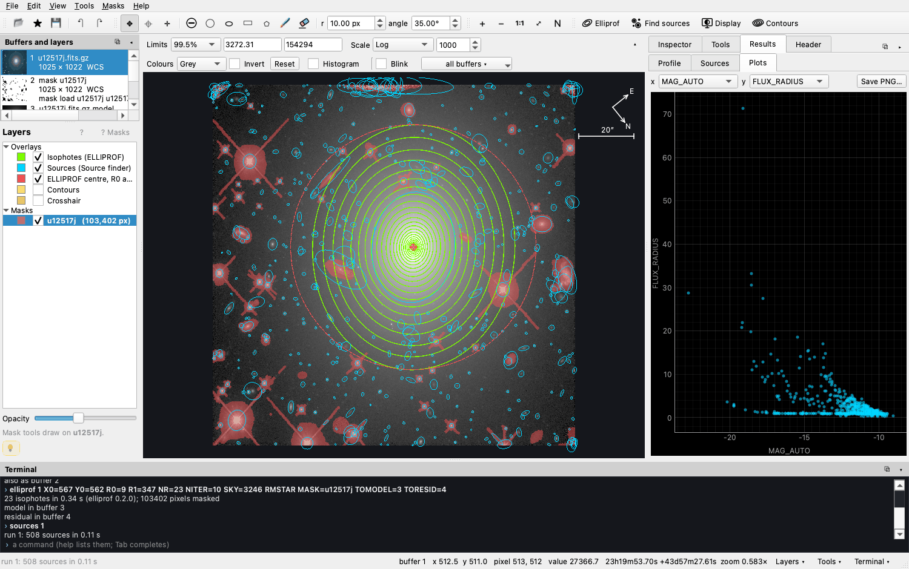
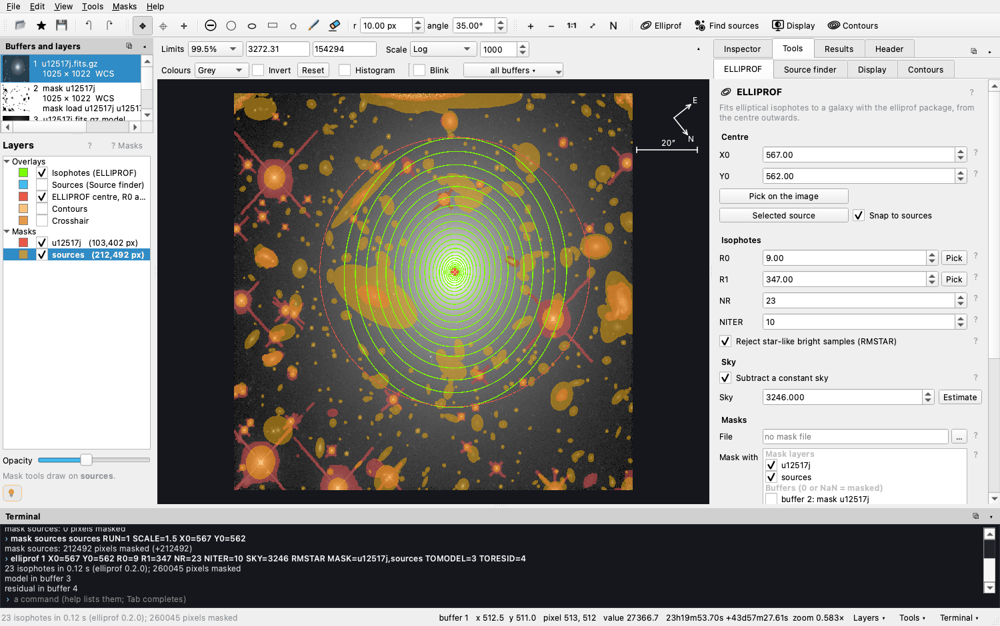

Reference
Commands & recipes
Everything AstroVista Lite does with data is a command. The buttons type them for you and the terminal echoes them, so you can learn them by watching. You can also type them, repeat them with ↑, complete them with Tab, and save them as a file that runs again. This page collects worked examples; The terminal explains how a line is written and the Command reference gives every command with all its keywords.

Images and buffers
A buffer is a numbered slot holding one image. Buffers are written
[1], [2], … (or B1, B2). The list on
the left shows each one with how it was made.
rd 1 galaxy.fits # read an image into buffer 1
rd 2 frame.fits[sci] # one image of a multi-extension file, by name
rd 3 frame.fits[sci,2] # by name and version; [1] picks by number
fitsinfo frame.fits # what the file holds
tv 2 # show buffer 2
copy 1 5 # copy buffer 1 into buffer 5
tag 5 "my copy" # a name of your own
wd 5 copy.fits # write buffer 5 as FITS
buffers # list themFITS files are recognised by their contents, gzip-compressed too, whatever they are called.
Image arithmetic
A formula is worked out pixel by pixel, and the result goes into the buffer on
the left of the =. [3] = [1] - [2] means each pixel of buffer 3
is the pixel of buffer 1 at the same place minus the pixel of buffer 2 there.
| In a formula | Meaning |
|---|---|
[1], B1 | a buffer: its pixel at each place |
3246, 2.5, 1e-3 | numbers, the same for every pixel |
k | a variable, set before with set k=2.5 |
pi, e, nan | constants |
mymask | a mask layer: 1 where good, NaN where it masks |
( ) ^ -x * / % + - | in that order of priority, as on paper |
< <= > >= == != | comparisons: 1 where true, 0 where false |
Worked examples
[2] = [1] - median([1]) tag="no sky" # subtract a constant sky
[3] = [1] / [5] # image / model (the model in buffer 5)
[4] = -2.5 * log10([1] / [2]) # a colour: magnitudes of two filters
[5] = [1] / sqrt(abs([1]) + 25) # a rough signal-to-noise map
[6] = median([1], [2], [3]) tag=stack # combine three exposures, NaN left out
[7] = ([1] - [8]) / [8] * 100 # the difference in per cent
[8] = div([1], [2], 0) # divide, 0 where buffer 2 is 0
set gain=2.4
[9] = [1] * gain tag=electrons # counts to electronsConditions
[5] = [1] > 1000 # 1 where brighter than 1000, else 0
[6] = where([1] > 1000, [1], 0) # keep the bright pixels, 0 elsewhere
[7] = where([1] > 1000, nan, [1]) # hide the bright pixels (NaN)
[8] = ([1] > 10) * ([1] < 100) # both true: multiply the conditions ("and")
[4] = [1] * mymask # NaN on the masked pixels
[4] = where(masked(mymask), 0, [1]) # 0 on the masked pixelsOne image or several
mean median sum min max std work two ways. With several values they work
pixel by pixel across the images: median([1], [2], [3]) combines
exposures. With one buffer they give a single number:
median([1]) is the median of all of buffer 1.
Other functions, pixel by pixel: abs sqrt exp log log10 sin cos tan arcsin arccos
arctan sinh cosh tanh floor ceil round isnan isfinite nan_to_num minimum maximum clip div
good masked.

help calc).Statistics and the sky
stats 1 # mean, median, std, min, max (masked and NaN pixels left out)
stats 1 MASK=mymask,sources # leaving out mask layers
sky 1 MASK=mymask # a 3-sigma clipped median of what the masks leave
max 1 # the brightest pixel and where it is
print 1 567 562 SIZE=5 # the pixel values around column 567, row 562Masks
A mask layer marks the pixels to leave out. In files, 0 = masked and 1 = good.
Layers can be drawn with the mouse, or made with commands; ERASE unmasks
instead of masking.
mask new mymask 1 # an empty mask the size of buffer 1
mask load edges edges.fits 1 # a FITS or legacy .dmask mask
mask circle mymask 812 440 12 # a circle at X, Y with radius R
mask ellipse mymask 300 300 70 22 35 # X Y A B ANGLE
mask box mymask 10 10 60 40 # X0 Y0 X1 Y1
mask polygon mymask 1 1 50 1 25 40 # corners
mask circle mymask 812 440 12 ERASE # unmask
mask nan mymask 1 # the pixels that are not finite
mask range mymask 1 60000 1e9 # saturated pixels
mask grow mymask 2 # 2 pixels bigger (shrink: smaller)
mask union all mymask edges # combine layers (intersect too)
mask save mymask mymask.fits # FITS, 1 = good (.dmask: legacy bitmap)
undo # and redoCoordinates are ELLIPROF's: the first pixel spans 0 to 1, so its centre is at 0.5.
help mask lists every action.
The source finder
It detects and measures the stars and galaxies in an image with SEP, which implements SExtractor's algorithms. Settings and catalogue columns keep SExtractor's names.
sources 1 # find them
sources 1 DETECT_THRESH=2.5 DETECT_MINAREA=8 # with your own settings
sources 1 MASK=edges TOSEG=6 # leave out a mask; the segmentation into buffer 6
runs # every run, numbered
centre 1 SOURCE=12 # ELLIPROF's centre from source 12
mask new sources 1
mask sources sources SCALE=1.5 # mask every source but the galaxy
mask new stars 1
mask sources stars WHERE='FLUX_RADIUS < 2.5' # only the sources matching a condition
mask segments sources GROW=2 # their pixels, grown by 2

Isophotes with ELLIPROF
elliprof 1 X0=567 Y0=562 R0=9 R1=347 NR=23 NITER=10 SKY=3246 RMSTAR MASK=u12517j,sources TOMODEL=3 TORESID=4| Keyword | Meaning |
|---|---|
X0 Y0 | the centre (ELLIPROF's coordinates) |
R0 R1 NR | the first and last semi-major axis, and the number of ellipses |
NITER | iterations per ellipse |
SKY | a constant sky subtracted first |
RMSTAR | reject star-like bright samples on each ellipse |
MASK=a,b | mask layers to leave out (MASKBUF= buffers, MASKFILE= a file) |
TOMODEL TORESID | the buffers for the model and the residual |

Image commands
In the style of the VISTA and MONSTA command languages, written for AstroVista Lite:
| Commands | What they do |
|---|---|
ac sc mc dc | add, subtract, multiply or divide a buffer by a constant |
ai si mi di | the same with another buffer |
log ln sqrt inverse round | functions in place |
mn max min abx print | numbers about a buffer |
shift rotate flip bin mash | move, turn, mirror, rebin and collapse |
smooth filt zap clip skysub | smoothing, median filter, cosmic rays, limits, sky |
fft noise gauss | power spectrum, added noise, an artificial star |
ch chead | set and read FITS header keywords |
smooth 1 FWHM=3 # a Gaussian smoothing
zap 1 SIG=5 # remove cosmic rays and hot pixels
rotate 1 ANGLE=90 # multiples of 90 are exact
gauss 1 X=200 Y=200 FWHM=2.5 PEAK=5000 # add an artificial star
help smooth # any command explainedCommand files and variables
A command file is plain text, one command per line, with # for comments.
File names inside it are relative to the file's own folder, so it can be shared with
its data.
set xc=567 yc=562
elliprof 1 X0=xc Y0=yc R0=9 R1=347 NR=23
typ # show the variables
run session.txt # run a file (or: astrovista --run session.txt)File ▸ Save the commands writes the session so far. Programs on the PATH run in the
terminal too (ls, grep, …); a line starting with !
always goes to the shell.
Recipes
Measure a galaxy's profile
Open the image ▸ Source finder ▸ Find sources ▸ ELLIPROF: Pick on the image (it snaps to the galaxy), Pick R1 where it fades ▸ Estimate the sky ▸ Mask the found sources ▸ Fit isophotes ▸ Results ▸ Profile, tick R¼ law.
See what the model misses
After a fit, tick Blink, choose the image and the residual, and press ← →. Or
[9] = [1] / [3] tag="ratio", with the model in buffer 3.
Mask a bright source by hand
Choose the circle tool (M), set its radius, and click the source. Alt-click unmasks; Ctrl+Z undoes.
Find only bright, compact sources
Raise the detection threshold in the Source finder, or use Masks ▸ Mask the sources
where… with MAG_AUTO < 18 and FWHM_IMAGE < 3.
Subtract the sky and save
[2] = [1] - median([1]) tag="no sky"
wd 2 nosky.fitsCombine exposures
rd 1 exp1.fits
rd 2 exp2.fits
rd 3 exp3.fits
[4] = median([1], [2], [3]) tag=stack
wd 4 stack.fits